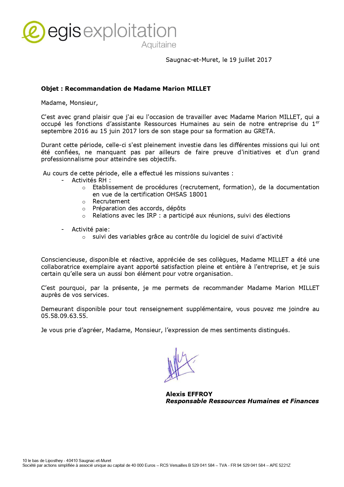
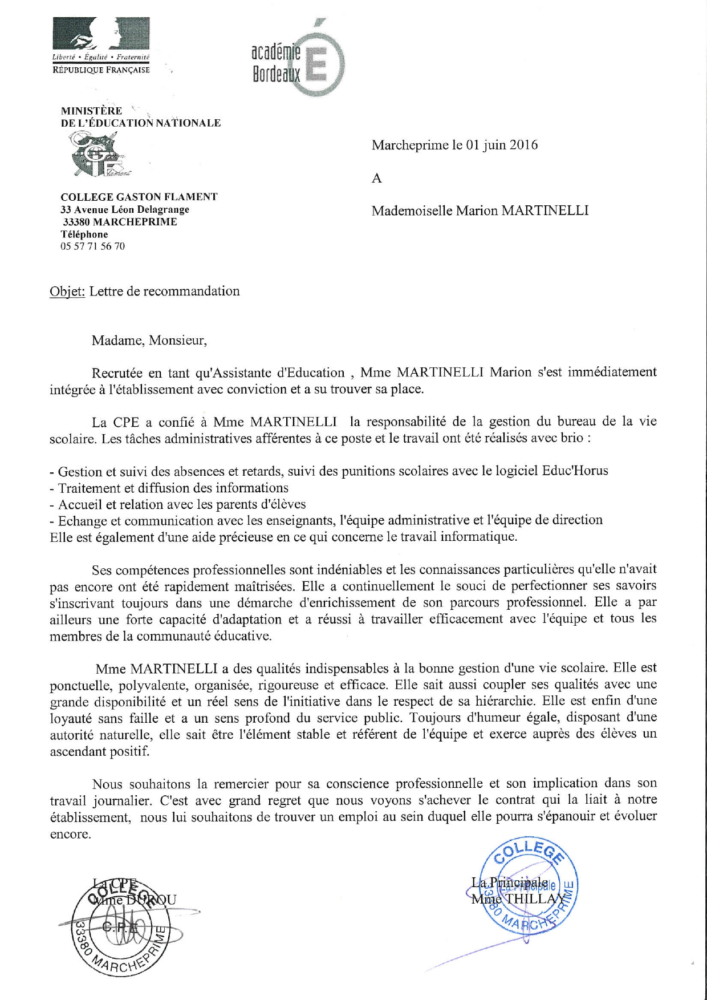

Egis Exploitation Aquitaine
Assistante RH -

Lettre de recommandation officielle d'Egis Exploitation Aquitaine attestant de mes compétences en tant qu'Assistante Ressources Humaines
Collège de Marcheprime
Assistante d'Éducation -

Lettre de recommandation officielle du Collège de Marcheprime attestant de mes compétences en tant qu'Assistante d'Éducation